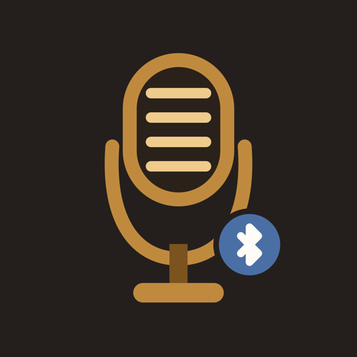
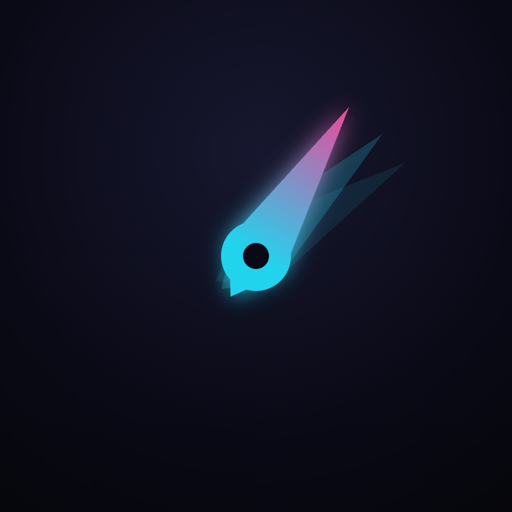

Small apps that do one thing.
Independently made for iPhone. No accounts, no dashboards, nothing that needs explaining twice.
Two apps, so far
-

Karaoke Mic
Your phone becomes the microphone. Tap the button and your voice comes out of the Bluetooth speaker across the room — no cable, no mixer, and nothing is ever recorded.
Open Karaoke MicEleven voices — try one
-

Speedometer Lite
Your speed, read off the GPS and shown on a dial you pick. Record a drive and get the route back on a map. It works with the phone offline, and your trips stay on it.
Open Speedometer LiteFifteen themes — try one
What “small” means here
One job
If it needs a tutorial, it's the wrong app. Each one does a single thing and then gets out of the way.
Nothing to sign in to
No account, no profile, no password to forget. Open the app and it works.
Plain about money
Free where it can be. Where there's a subscription, you're told exactly what it unlocks, and what it costs, before you pay for it.